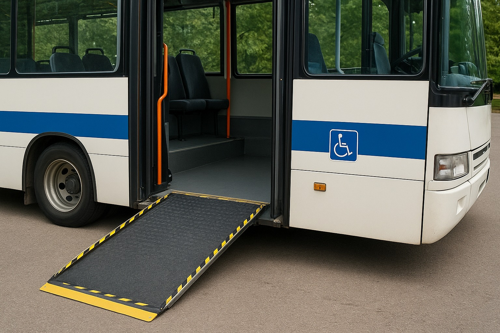
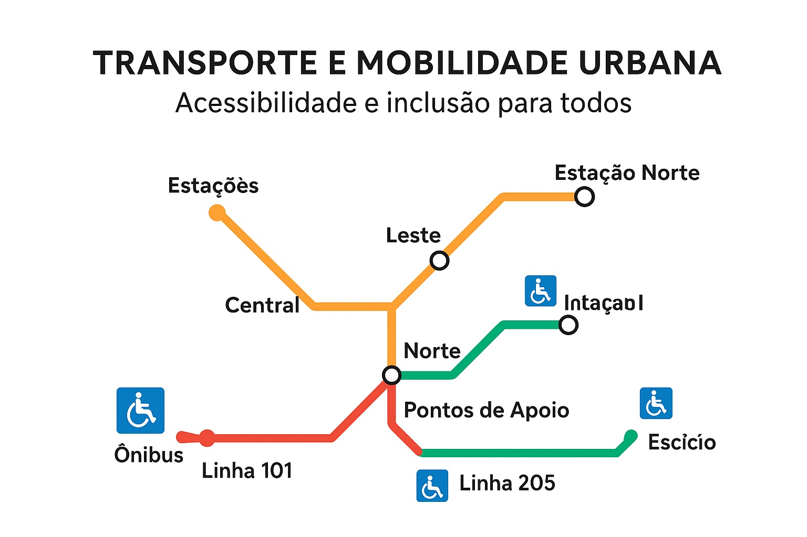
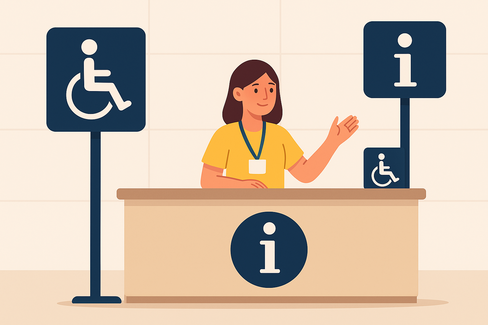

Ônibus com acessibilidade
- Linha 101 – Possui rampa e espaço para cadeira de rodas.
- Linha 205 – Sem adaptação completa.
- Linha 330 – Elevador hidráulico disponível.
Estações acessíveis
- Estação Central – Elevador e piso tátil.
- Estação Leste – Piso tátil, sem elevador.
- Estação Norte – Elevador disponível.
Pontos de apoio
- Balcão de informações adaptado – Estação Central.
- Posto móvel – Rua das Flores.